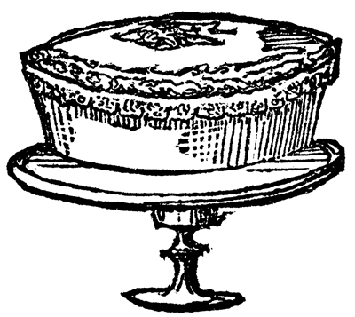

Las pinturas rupestres son las primeras evidencias de nuestro salto evolutivo, aquel que nos diferenció para siempre de otras criaturas que vuelan, nadan, trotan o se arrastran. En un momento de solaz, hace decenas de miles de años, alguien se dedicó a plasmar escenas de caza o rituales para propiciarla. Ergo, la búsqueda de alimentos está en los primeros parpadeos de la civilización. El resto ocurre a medida que el hombre empieza a cultivar plantas y domesticar animales. Esta solución, que nos evitó la hambrienta trashumancia en busca de presas esquivas y escasas, permitió que crecieran los grupos humanos, tuviéramos organizaciones sociales más complejas y, en vista de que ya no había cuevas suficientes para albergar a la población, levantáramos las primeras casas.
Eso demuestra que la cultura pasa por la mente y por el estómago. En la literatura hay ejemplos notables como el canto IX de La Odisea, cuando la tripulación de Ulises sigue la dieta de los lotófagos; o las Mil y una noches, donde se cuece el bulgur y la carne en mandil; por su parte, el Antiguo Testamento cuenta que Esaú le cambió su primogenitura a Jacob por un plato de lentejas; y el Nuevo Testamento, la Última Cena. La combinación entre sartenes, fogones y escritura ha producido a Grimod de La Reynière, Vázquez Montalbán, Bill Buford y Anthony Bourdain.
La literatura culinaria tiene un subgénero: los libros de recetas. El primero que se conoce, De re coquinaria, escrito por el gastrónomo romano Marco Gavio Apicio en el siglo i de nuestra era, marca una impronta para todos los libros similares: llevar la cocina hacia el terreno del hedonismo y la sensualidad, acercarla al arte. Son una variante práctica que conserva un lugar modesto respecto de la literatura —ningún recetario compite con Kitchen Confidential, menos aún con Madame Bovary—, pero que transmite saberes, técnicas, procedimientos, y constituye un testimonio de épocas, costumbres, rituales y lugares. Todos los recetarios, en mayor o menor medida, poseen un valor patrimonial. Por eso en Libro al Viento nos complace inaugurar nuestra Colección Capital con este Recetario santafereño.
Antes del Descubrimiento, los pobladores de la Sabana tenían una dieta a base de maíz y algunos tubérculos —papas, cubios, hibias y chuguas—, así como calabazas, frutas y carne de algunos animales. Condimentaban con sal, achiote y ají. Las arepas y tamales prueban que en algunos alimentos existía cierto grado de elaboración. Bebían chocolate y fermentos de cereales y frutas, el más popular de ellos era la chicha de maíz.
Así como las papas, el tomate y el cacao llegaron a Europa —y se integraron con toda naturalidad a la tortilla española, la salsa pomodoro italiana o los chocolates suizos—, los conquistadores trajeron al Nuevo Mundo el trigo, las alcaparras, los cerdos y vacas. La lista de este intercambio es mucho más larga, por supuesto. Durante la Colonia fue ampliándose este proceso y sus límites fueron haciéndose más borrosos. El cuchuco con espinazo, que combina elementos autóctonos y españoles, es producto de este mestizaje gastronómico; el ajiaco, plato que está en el centro mismo de la identidad manducaria capitalina, es la evolución de un cocido ancestral cuyo sello distintivo eran las guascas, cuya mezcla de carnes se redujo al pollo y al que los españoles agregaron crema de leche y alcaparras. Pero no todo vino de ultramar. Desde variados pisos térmicos y geografías americanas fluyeron diferentes productos hacia la Capital, como la miel, la panela, los plátanos y el carnero, de manera que fue ampliándose el repertorio de preparaciones.
El Período Republicano trae nuevos influjos, producto de migraciones y viajeros. Los primeros intentos de producción cervecera local, en 1820, vienen de ciudadanos ingleses que se habían instalado definitivamente en Bogotá o estaban de paso. Fueron ellos los que perfeccionaron, entre los carniceros capitalinos, los diferentes cortes de cerdo y de res. A ellos se debe la receta del beef-steak, al que después se agregaría guiso de cebolla y tomate, para que su transformación «a la criolla» hiciera parte impajaritable de la gastronomía nacional. El ponqué, adaptación del pound-cake inglés, sería otro de los aportes importantes a nuestro menú. La ceremonia del té, que algunas familias pudientes instauraron para diferenciarse del tradicional chocolate, trajo un sinnúmero de galletitas y bizcochos.
Hacia mediados del siglo xix, la capital no fue ajena a la expansión y hegemonía culinaria francesa: salsas, gratinados, rollos y soufflés, así como toda una patisserie y boulangerie vinieron a competir con los sudados y sopas, las mogollas, garullas, rosquetes y colaciones autóctonas —campo en el que teníamos buenas credenciales, gracias al impulso de la cocina conventual—.
De igual forma, en la segunda mitad del siglo antepasado las importaciones inundaron el comercio de vinos, vinagres, condimentos y manjares extranjeros, merced a la depuración de las técnicas de almacenamiento que permitieron la llegada de enlatados, encurtidos y conservas. Gracias a la libertad de normas aduaneras llegaron baterías de cocina, utensilios para pelar, triturar, rallar y rellenar, así como cocinas de fierro que fueron reemplazando las tres piedras en el suelo y las rudimentarias hogueras. Los más pudientes compraron vajillas europeas, y para exhibirlas en sociedad organizaron banquetes que, por primera vez, necesitaban cocineros especializados.

A partir de 1853, con el Manual de artes, oficios, cocina y repostería que editó la imprenta de don Nicolás Gómez, se inaugura la publicación de recetarios. La rotación de empleadas domésticas entre una y otra casa contribuye también a la difusión de recetas que hasta entonces eran consideradas secretos de familia. En el último tercio del siglo aparecerán los restaurantes, cafés, panaderías; también empezarán a operar las primeras fábricas de comestibles.
Las guerras de final del xix, así como la violencia partidista de la primera mitad del siglo xx contribuyen a migraciones internas, muchas de ellas hacia la capital. Los recién llegados traen consigo los platos de sus regiones. Así, la gastronomía santafereña sufre otra influencia importante. Con el siglo xx llega el gas, la energía eléctrica y los electrodomésticos. También viene la influencia norteamericana, a la que debemos, por ejemplo, que el pavo compita con los tamales, la natilla y el chocolate en las fiestas decembrinas. El crecimiento demográfico hace que proliferen los restaurantes, pues la ciudad se agranda y ya es imposible almorzar todos los días en casa. A partir de los años sesenta la mujer va sumándose a la fuerza laboral. Muchos hogares necesitan dos sueldos para sobrevivir, de tal manera que las comidas se aligeran, pues ya es imposible cocinar platos que requieren todo un día. En los tardíos sesenta y tempranos setenta surgen los primeros sitios de comida rápida, que tendrán un desarrollo masivo en la década siguiente. Revistas como Cromos, Carrusel y Consigna tienen una página dedicada a la culinaria; los programas de televisión Cocine de primera con Segundo y Saúl en la olla ocupan un lugar importante en el imaginario colombiano. La llegada masiva de estudiantes y profesionales a Bogotá propicia la oferta de comida regional —fondas paisas, sitios de comida tolimense, valluna, costeña—, y en los hogares se van mezclando todo tipo de influencias. La apertura económica que vino con el gobierno de César Gaviria permitió la llegada de diversos productos extranjeros a los supermercados, y el proceso de globalización abrió la oferta de restaurantes foráneos, que hasta entonces eran en su mayoría italianos, franceses, mediterráneos, mexicanos y españoles. La cocinas thai, japonesa, árabe e hindú dejaron su aura de exotismo, se afincaron en Bogotá, Medellín, Cali, Cartagena, Barranquilla, y van extendiéndose al resto del país. Con el cambio de siglo y el auge de la cocina fusión termina de volverse problemática la tarea de seleccionar los platos auténticamente santafereños, una dificultad que ha existido desde siempre, si atendemos a este fragmento del gran cronista José María Cordovez Moure (1835-1918):
Se hubiera podido hacer una exhibición de productos alimenticios con los objetos que de las provincias enviaban a los colegiales… de Antioquia venía algarroba, hedionda como la valeriana, gofio o hígado disecado al sol; de Popayán, monos de pastilla (estorque), dulces finos y pelotas de caucho, del Valle del Cauca calillas de tabaco, de Palmira cajitas de dulce, chocolate y quereme para echar entre la ropa, del Tolima chocolate, bizcocho de maíz y tasajo de ternera; de la Costa, camarones y cocos; de Boyacá, quesos de estera, dátiles de Soatá y bocadillos de Moniquirá, y de Santander batido, tabacos de Girón, masato de Vélez en perra de cuero y paquetes de hormigas fritas.
Valga el recuento anterior para señalar que este Recetario santafereño desborda los límites capitalinos. Si bien pretendimos incluir una serie de platos representativos de la gastronomía local —que podría ampliarse al altiplano cundiboyacense—, existen las islas flotantes que vienen de Francia; o amasijos como los pandeyucas, que ya es imposible circunscribirlos a una región determinada del país —en recetarios manuscritos de los que hablaremos en el siguiente apartado ya figuraba la receta del pandeyuca—. Por razones de espacio, no cupieron todas las recetas que quisimos incluir; de otro lado, podría señalarse la que faltó o la que sobra. Eso, para no mencionar ingredientes o técnicas de este o aquel plato, terreno en el que seguro habrá mayores discordias. En nuestro descargo podemos decir que todos los recetarios consultados son susceptibles de iguales reparos, y que las divergencias entre una y otra receta van en contra de la tranquilizadora, cómoda unanimidad.
En septiembre de 2009 el Instituto Distrital de Patrimonio Cutural organizó la exposición De mercados, mesas y paseos, que pretendía recuperar la memoria gastronómica santafereña. En ella se hizo una convocatoria para que los bogotanos trajeran los antiguos utensilios de cocina que aún estuviesen en sus casas. Entre las baterías de cocina, peroles y vajillas, una paila para hacer arequipe y un baúl para guardar chocolate que llegaron de diferentes hogares, la señora María Teresa Gómez Duque trajo el cuaderno de recetas de su mamá y el señor Germán Pardo Rojas exhumó los cuadernos en que su madre y sus tías, las hermanas Paulina, María Teresa y María Luisa Castañeda Rubiano, propietarias de una panadería y luego dulcería, consignaban sus secretos culinarios. Páginas y páginas en la pareja, minuciosa y arrebolada caligrafía de principios del siglo xx, con algunas preparaciones inesperadas, sugerentes, originales, y otras imposibles porque ya desaparecieron los ingredientes o se simplificaron los procedimientos, pero que incluimos aquí por su valor testimonial.
El profesor Luis Carlos Segura nos proveyó con un arsenal de recetarios, investigaciones históricas y ensayos que están referenciados en la bibliografía. De su investigación sobre las garullas y almojábanas de Soacha tomamos las respectivas recetas. La profesora Doris Méndez despejó algunas dudas sobre la gastronomía del siglo pasado y nos señaló algunos autores importantes. Abuelos, madres y amigos abundaron en recetas y referencias históricas; los textos de Lácydes Moreno, Aída Martínez Carreño y Cecilia Restrepo Manrique sirvieron de columna vertebral para algunas ideas de este prólogo. La firme y entusiasta colaboración de Laura Acero permitió salpimentar este recetario con textos, versos, fragmentos epistolares, datos curiosos y toda suerte de guarniciones literarias.
Todos los aciertos se deben a ellos y a los autores de los recetarios consultados. Todas las fallas son culpa mía.
Antonio García Ángel